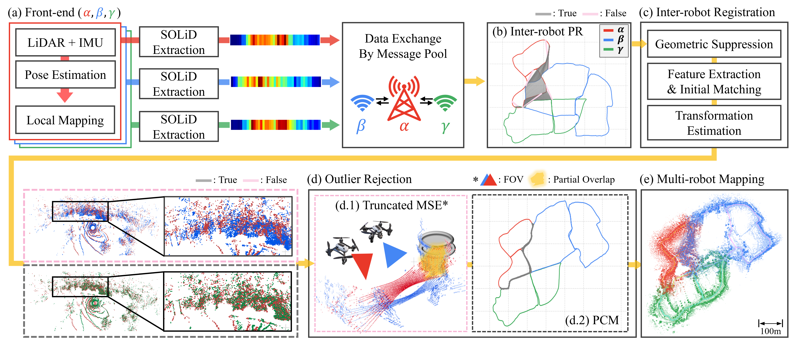

Resource limitation
[Placeholder] Describe the resource-limitation challenge (network/memory/onboard compute in the field).

[Placeholder] Add the SKiD-SLAM abstract here.
[Placeholder] Describe the problem SKiD-SLAM targets.
[Placeholder] Describe the resource-limitation challenge (network/memory/onboard compute in the field).
[Placeholder] Describe the loop-closure / association challenge under large viewpoint differences.
[Placeholder key insight sentence.] Add the one-line core idea of SKiD-SLAM here, then expand.
[Placeholder]
[Placeholder]
[Placeholder]
[Placeholder]
[Placeholder] Describe the SKiD-SLAM pipeline flow.
[Placeholder] Describe the method components.
Reason [Placeholder] Why this component is needed.
Method [Placeholder] How it works.
Reason [Placeholder]
Method [Placeholder]
Reason [Placeholder]
Method [Placeholder]
[Placeholder] Summarize the evaluation datasets and headline results.
[Placeholder] Describe what this chart reports and on which dataset.
[Placeholder] Describe ablation setup and findings.
[Placeholder] Ablation description.
@article{kim2026skidslam,
author = {Kim, Hogyun and Choi, Jiwon and Kim, Juwon and Yang, Geonmo and Cho, Dongjin and Lim, Hyungtae and Cho, Younggun},
title = {SKiD-SLAM: Resource-Aware Distributed Multi-Robot LiDAR SLAM for Planetary Missions with Field Deployments at Analog Sites},
journal = {IEEE Transactions on Field Robotics (T-FR)},
year = {2026},
}